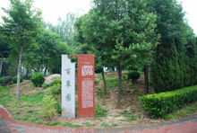

隋唐遗址植物园
简介:
洛阳市隋唐城遗址植物园位于隋唐洛阳城遗址，始建于2005年12月，占地面积2800余亩，是以河南豫西地区地带性植物和隋唐城遗址文化为基础，坚持科学保护与合理利用相结合，集科研、科普、文化娱乐为一体的综合性植物园。园内建设有千姿牡丹园、野趣水景园、木兰琼花园、百草园、梅园、竹园、桂花园等17个专类园区。
五大都城遗址之一的隋唐洛阳城遗址是是隋、唐两代东都都城遗址（公元605年——公元907年）。整体格局主要由城郭遗址、苑囿遗址、漕运遗址和墓葬遗址四部分组成。城郭遗址总面积约47 平方公里，平面大致呈南宽北窄的梯形。城郭遗址按照空间分布格局可分为洛河以南里坊区(以下简称 洛南里坊区)、洛河以北里坊区及洛河以北宫城皇城区。洛南里坊犀遗址，是隋唐洛阳城里坊遗址的主要分布区。遗址面积约22 平方公里，占城郭遗址规模的三分之二。
在20个专类园中，绿地面积达130万平方米，种植乔木、灌木1000多个品种共130余万株，水生植物200多种，种植地被植物50万平方米。千姿牡丹园园中共种植九大色系、1200多个品种27万株牡丹，芍药22个品种3000余株。
主要景观:
园内建设了千姿牡丹园、野趣水景园、木兰琼花园、万柳园、岩石园、百草园、梅园、竹园、海棠园、桂花园、芳香园等17个专类园区，20多个休闲娱乐广场，形式各异、造型独特，与之相辉映的30多组亭台、廊架，既体现了隋唐时期建筑风格，又不乏浓郁的现代气息。
园内有3万多平方米湖泊、湿地和大片疏林缀花草地等组成的野趣水景园；1万多米长的水系明渠蜿蜒贯通、巧妙连接，既发挥了灌溉功能，又增添了植物园的灵秀之气，共同营造出流水潺潺、碧波荡漾、水鸟纷飞、野趣盎然，如诗似画的迷人景象。全园植物种类达1000多种，总绿地面积130万平方米，在植物配置上以乔、灌、花、草合理搭配，形成南北艺术交汇，自然与规则共融，中外园林相结合的植物园。
No.1 千姿牡丹园
千姿牡丹园占地350亩，由百花园、特色园、九色园、科技示范园四个园区组成，目前共种植九大色系的牡丹1258个品种、30余万株，国内牡丹涵盖中原牡丹品种群、西北牡丹品种群、江南牡丹品种群、西南牡丹品种群，国外牡丹包括日本、欧美品种群，是目前国内牡丹品种最多的牡丹园之一。
千姿牡丹园
No.2 野趣水景园
野趣水景园
水景园位于植物园西北角，占地约96000多平米，水域面积32000多平米，南面、东面是大面积的疏林缀花草地。主要表现水生植物的生态特点和自然野趣。全园种植乔灌木64种，地被植物14种,收集水生植物105种，主要以睡莲科、蓼科、水鳖科、黑三棱科、泽泻科、莎草科、天南星科、香蒲科等水生植物为主，其中荷花品种93种，睡莲品种11种。夏秋之际，荷花风姿绰约，睡莲楚楚动人，加上各种浮水水生花卉形成水景园的观景重点。园内以一条明渠作为主线，积水成潭，截流成瀑，环水成洲，跨水筑桥，两岸多呈自然式缓坡延伸入水状，当岸上盛开绚丽多彩的野花组合时，水生植物与之相互衬托对比，呈现出丰富的景观层次和深邃的山野意境。
No.3 木兰琼花园
木兰琼花园位于植物园的中北部，占地约19900平米。园内以表现木兰亚纲的多花、树形优美为特色，以多花灌木与地被作为中下层，结合木兰亚纲开花乔木营造春景的繁花似锦的氛围。园内的木兰品种达27个，栽种有景新玉兰、红荷玉兰、天目木兰、新奇玉兰、宝华玉兰等名品。另有忍冬属9种，荚蒾属13种。忍冬科植物（琼花）又称聚八仙，四五月间开花，花大如盆，洁白如玉。观果期为8—10月,秋果红若珊瑚，为花果兼美的观赏树种。
木兰琼花园
No.4 裸子植物园
裸子植物园位于植物园东北角，占地约33900平方米。全世界生存的裸子植物约有800种，隶属于79属和15科。裸子植物园有6科14属29种，栽种有银杏、水杉、墨西哥落羽杉、中山杉、冷杉、罗汉松、白皮松、雪松、五针松、马尾松、油松、乔松、日本花柏、绒柏、圆柏、铅笔柏、蜀桧、偃柏等。这里冬季绿色经久不衰，春夏松荫匝地，到了秋季，金黄的银杏、火棘、黄栌等，和苍松的翠绿相间，成为游览休憩、科普教育的重要场所。
裸子植物园
No.5 百草园
 百草园
百草园位于植物园区的中北部，面积35400平米。主要由阴生草花区，观赏性草花区，药用草花区，经济性草花区和亲水空间组成。收集药用草本植物61个品种，按属性分别栽植于花坛、林下、水边、山坡。品种有川乌、柴胡、杭菊、毛茛、贯众、百合、山丹丹、大黄、三七、白头翁、射干、桔梗、山棉花、独活、独角莲、草芍药、冬凌草、狼毒大戟、龙胆草、沙参等，配置杜仲、银杏等有药用价值的乔木及山茱萸、丁香、谓实、金银花、接骨木、连翘等花灌木和药用木本植物，结合亲水空间构成良好的复层植物群落。
No.6 月季园（蔷薇园）
月季园（蔷薇园）
月季园位于植物园区的中北部，面积23000平米。栽培258个月季品种。本园选用现代杂种月季（品种月季）中大花型、色彩丰富、花香四溢的品种，在月季园中心区进行展示，辅以色彩艳丽三季有花的丰花月季中的部分繁花品种，用微型月季镶边，地被月季取代常规的草坪植物，以地被的形式栽植，形成花坛、花带、花溪，藤本月季结合钢构架与竹架形成花墙、花篱、花门，树状月季点缀其间。园内还设置亲水平台、花廊、园亭，配置造型龙柏、七叶树、广玉兰等植物点缀，营造出花团锦簇，自然和谐的园林景观。
No.7 竹园
世界上已知竹类植物约80属1000余种，我国约有40属近500种，占世界二分之一。竹园占地面积90亩，主要引种栽培了刚竹、慈竹、红竹、早园竹、淡竹、斑竹、金镶玉竹、毛竹、雷竹、紫竹、桂竹、乌哺鸡竹、苦竹、菲白竹、菲黄竹等34个品种约344594株，绿筠万杆、郁郁葱葱。竹园里依山伴水，其间点缀着竹亭、竹栏、叠泉石，竹林间环绕小径曲折通幽，形成了一道“日出有清荫，月照有清影。雨来有清声，风吹有清韵”的优美风景。
竹园
No.8 桂花园
桂花园位于植物园时代轴线的东侧，占地约47000多平米，主要以木犀属植物为主。全世界现有木犀属种属资源32种，中国拥有其中的27种，占世界总数的80%以上。其中桂花是木犀属中最主要的种群，我园收集桂花品种30多个，分属四季桂、银桂、金桂和丹桂4个品种群。四季桂品种群：四季开花，有月月桂、日香桂等;银桂品种群：秋季开花，花色纯白、乳白、黄白色，有柳叶银桂、桃叶银桂、大叶银桂等；金桂品种群：秋季开花，花柠檬黄淡至金黄色，有金秋桂、丛中笑、狭叶金桂等；丹桂品种群：秋季开花，花色较深，橙黄、橙红至朱红色，有红花丹桂、月尖红桂、籽丹桂等。
桂花园
No.9 梅园
梅园以梅花驰名，位于植物园南北中轴线的西侧，面积约73000平米，是梅花品种系统收集和展示的专类园地，现有梅花30多个品种，1万余株。按花型花色分，有宫粉型、红梅型、玉蝶型、朱砂型、绿萼型和洒金型等。其中宫粉型梅最为普遍，品种最多。玉蝶型别有风韵，绿萼型香味最浓，著名的有玉牒梅、绿萼、宫粉梅、朱砂梅、美人梅、龙游梅等，还有枯树老干的梅桩艺术盆景及不少百年以上的古梅。整个梅园以梅饰山，倚山植梅，古洛渠边洛石散落有致，古雅的亭台点缀在香海里，窈窕多姿。每年早春，山坡上的群梅冲寒怒放，山翠梅艳，颇为壮观。
梅园
No.10 丁香园
丁香园
丁香园位于人工湖的北侧，占地面积50150平米，园内主要收集有小叶丁香、暴马丁香、欧洲丁香、红丁香、阿穆尔丁香、波斯丁香、紫丁香等。在林间大乔木间与园林沿线上，成组、团式种植了大片的丁香，少则二、三十株，多则四、五十株，总数在千株以上。丁香夏季开花，花朵纤小而文弱，枝条柔软，花色淡紫，黄绿或白色，外素而内秀，花开之时，清香四溢。
No.11 海棠园
海棠园位于植物园西南角，占地28亩。海棠全世界共有35种，我国25种，该园收集蔷薇科苹果属、木瓜属的海棠品种27个,14845株。有传统品种：贴梗海棠、垂丝海棠、西府海棠、木瓜海棠、梨花海棠等，还有引自北美的花果俱佳的绚丽海棠、道格海棠、钻石海棠、霍巴海棠、红玉海棠、草莓果冻海棠、王族海棠、粉芽海棠、火焰海棠等。海棠一树千花，唐朝《花谱》称海棠为“花中神仙”。每年三、四月间，满坡的海棠万花齐放，层层叠叠、连绵不断、红白相溶、如晓天的明霞。海棠园内地形起伏变化，新古洛渠贯穿其中，渠边种植水生植物，野趣天成，在水流平缓处种植荷花、睡莲；临水处栽植垂柳，可谓是“柳占三春色，荷香四座风”。
海棠园
No.12 芳香园
芳香园
芳香园位于人工湖东北，19636平米。东南与桂花园相连，西与丁香园为邻，是集香花、香果或通体皆香的乔、灌、花、草为一体的专类园。园内主要种植芸香科、唇形科、木犀科、瑞香科、蔷薇科等芳香型植物，如木瓜、糯米椴、三亚乌药、结香、迷迭香、胡枝子、大叶女贞、云杉、香樟、桂花、白鹃梅、丁香等。该园西临植物园最大的人工湖，既可临岸观水，还可登高望远。临湖地块种植大片的红花酢浆草，似一条彩带沿湖岸延伸。微风袭来，芳香植物带来的阵阵微香，带给游客清新、静谧的环境，还能促进身体健康。
No.13 岩石园
岩石园位于植物园的中北部，占地约13746平米，共有植物58种，以展示岩石及岩生植物为主。园中以山石与小地形结合起来，依山叠石，沿坡起伏。岩生植物选择植株低矮，开花繁茂，色彩艳丽的种类，如紫菀、石竹、福禄考、百里香、景天类、野菊等种植在路边岩石的缝隙中及山坡上，并配以低矮的木本植物、多年生宿根、球根花卉及一年生草本花卉，主要有木本香薷、小花溲疏、锦鸡儿、石蒜类、栒子、绣线菊、铺地柏等，做到花中有石，石中有花，体现一种原生态的接近自然的色彩斑斓的植物景观。碎石铺就的游览小径柔和曲折，更具有自然野趣。岩石园内设置广场，满足人们休闲聚会的功能，场地设孤形花带做为背景，烘托春景的气氛。
岩石园
No.14 万柳园
 万柳园
万柳园
万柳园位于人工湖的西侧，占地20634平米。主要种植杨柳科、棕榈科、木犀科、蔷薇科、松科等植物。其中杨柳科植物14种，60个品种。该园环湖石玑临流，绿荫接岸。以青翠柳色作为园子的景观基调。沿湖堤岸柳树、碧桃间隔种植，西侧棕榈点缀其间，山坡上种植大叶女贞、雪松、白皮松等常绿树种，湖边、林下种植景天等地被植物，园路沿途栽种垂柳、金丝柳、红心柳、龙爪柳、翠竹柳、旱柳、银芽柳、馒头柳等特色柳树。园中还片植碧桃、红叶李等观花、观叶树种。烟花三月，轻风摇曳，柳丝飘舞如柳浪翻空，艳桃灼灼，更有湖波如镜，映照倩影，一派春光明媚的景象。
No.15 外来植物园
外来植物园
外来园位于植物园西南，占地22992平米。采用西方古典园林的设计理念，在建园艺术上追求完整，和谐，鲜明的特征，力求体现出严谨的理性。园中利用植物园西南角的水渠，形成规则式水轴线。同时结合里坊的规则式的布局，用黄杨、红花檵木、金叶女贞沿中轴两侧勾绘出巨大的模纹花坛，用线条高耸的蜀桧种植成树阵迷宫围和出独立空间，强化里坊布局的文化性。采用规则式的形式形成各种花卉的植床，在植床里种植色彩鲜艳的草本、球根、块根花卉，依季节不同变换不同的色彩。大面积的混播草坪点缀高大的棕榈、树叶奇特的马褂木、龟甲冬青、构骨球，突出外来园的特色。使人们在东西和南北几条轴线穿行时都能感受不同的植物空间。
No.7 绚秋园
绚秋园位于时代轴线中北部，对时代轴线呈半包围状。该园面积36722平米，主要收集植物叶、干、果常年或季节性等呈彩色的植物，以槭树科槭树属植物为主。该科植物季相变化明显，为珍贵的观叶树种。园林造景依据起伏的地形，配置错落有致的植物群落。这里有红叶李、紫叶矮樱、红栌、黄栌等彩叶树种及栾树、元宝枫、血皮槭、五裂槭、青榨槭、鸡爪槭、红枫、葛萝槭等秋季观叶树种20余类，还有枝干呈红色的红瑞木、枝干呈金黄色的黄金槐等，也有“活化石”水杉、银杏等植物，配以观叶、观果灌木火棘和松柏、菊花等，着意渲染秋色的绚丽多彩。总体上追求简洁、质朴、清新的自然风格，突出植物造景，以秋花、秋叶、秋实表现秋色的绚丽，体现植物展区的科学内涵。
绚秋园
隋唐遗址植物园地图及旅游路线:
开放时间
旺季：04月01日-10月07日 开放时间： 07:30-22:00
10月08日-10月31日 07:30-18:00
淡季：02月01日-03月31日 开放时间： 08:00-18:00
11月01日-次年01月31日 08:00-17:30
景点交通:
自驾车线路：王城大道南200米处靠近博物馆；南门：古城路与市府东街交叉口向西130米路北；西门：王城大道与洛宜公路交叉口
乘车线路：乘坐29/K29路 49/K49路 60/K60路 62路 75/K75路 K26路 K37路 K92路 K99路 到隋唐城植物园西门下车 步行205米 ；乘坐60/K60路 68路 K34路 K68路 到积翠南街积翠北街口下车 步行263米 。